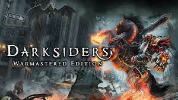

darksiders
es un juego para mayores

el juego no es acto para niño
Las tiendas son lugares donde podrás comprar diversos tipos de objetos para mejorar tus capacidades ofensivas o defensivas en el juego. Tendrás que usar dos tipos de monedas de intercambio para comprar las cosas ofrecidas en las tiendas: almas y monedas del Barquero. Recuerda revisar bien las ofertas que recibas y compra solo lo que creas que es imprescindible según tu estilo de juego, ya que podrías encontrar una tienda con una mejora más interesante más adelante y no tener el dinero suficiente. Estas son las tiendas disponibles en el juego y los objetos que se ofrecen en ellas: